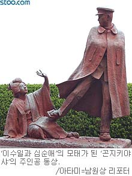

사실 이수일과 심순애. 이름만 잘 알려져 있지 우리 세대 (...20대...)는 간략한 시나리오 조차 잘 모르는 경우가 많다.
그저 주워들은 얘기로 이수일과 심순애가 사랑을 하는데 김중배가 돈으로 꼬셨다가 실패한 정도로 알고 있는게 보통이다. 그래서 물질을 능가하는 사랑의 표본 정도로 알고들 있다.
하지만. 실제 내용은 그렇지 않다.
이수일과 심순애. 스토리는 다음과 같다.
-----------------------------------------------------------------------------------------
줄거리 : 주인공 이수일은 일찍이 부모를 여의고 아버지의 친구인 심택의 집에서 자라나 고등학교까지 마친 뒤 심순애와 혼인을 약속한다. 그런 어느 정월 보름날, 심순애는 김소사의 집으로 윷놀이를 갔다가, 거기에서 대부호의 아들인 김중배를 만난다. 심순애에게 매혹된 김중배는 다이아몬드와 물질공세로 그녀를 유혹하였고, 심순애의 마음은 점점 이수일로부터 멀어져간다.
이 사실을 알게 된 이수일은 달빛 어린 대동강가 부벽루에서 심순애를 달래보고 꾸짖어도 보았으나, 한 번 물질에 눈이 어두워진 여자의 마음을 돌릴 수 없었다. 울분과 타락 끝에 고리대금업자 김정연의 서기가 된 이수일은 김정연의 죽음과 함께 많은 유산을 받게 된다. 이런 소용돌이 속에서 자신의 과오를 뉘우친 심순애는 대동강에 투신자살하려다가 수일의 친구인 백낙관에게 구출된다. 결국, 두 사람은 백낙관의 끈질긴 설득으로 다시 결합하여 새 출발을 하게 된다.
-----------------------------------------------------------------------------------------
이 사실을 알게 된 이수일은 달빛 어린 대동강가 부벽루에서 심순애를 달래보고 꾸짖어도 보았으나, 한 번 물질에 눈이 어두워진 여자의 마음을 돌릴 수 없었다. 울분과 타락 끝에 고리대금업자 김정연의 서기가 된 이수일은 김정연의 죽음과 함께 많은 유산을 받게 된다. 이런 소용돌이 속에서 자신의 과오를 뉘우친 심순애는 대동강에 투신자살하려다가 수일의 친구인 백낙관에게 구출된다. 결국, 두 사람은 백낙관의 끈질긴 설득으로 다시 결합하여 새 출발을 하게 된다.
-----------------------------------------------------------------------------------------
어떤가?
결국은 돈에 이끌려 이리저리 흔들리는 여자의 모습을 그린 작품일 뿐이다.
그리고. 돈이 있으면 사랑도 얻을 수 있다는 물질 만능 주의의 표상일 뿐이다.